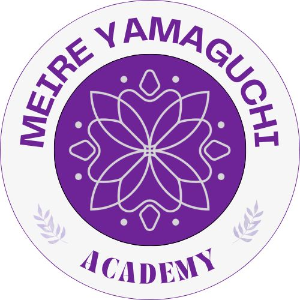

Encontro 1 — Fundamentos
Quinta-feira, 6 de agosto de 2026Das 19h às 22h
Online pelo Zoom
Protocolos práticos de estabilização emocional para crises, catástrofes e traumas coletivos.
Uma formação gratuita voltada a voluntários da ACURA Brasil que desejam ampliar seus recursos de acolhimento emocional em situações de catástrofe, perdas, deslocamentos, luto e traumas coletivos.
Três encontros ao vivo, com carga horária total de 19 horas.
Das 19h às 22h
Online pelo Zoom
Das 9h às 17h
Online pelo Zoom
Das 9h às 17h
Online pelo Zoom
O EFT Avatar é uma técnica de estimulação de pontos de acupuntura combinada ao foco verbal na questão perturbadora. Baseia-se no princípio da estimulação desses pontos, visando contribuir para o bem-estar físico, psicológico e emocional.
Durante a formação, os participantes conhecerão o protocolo básico, os pontos utilizados, a escala subjetiva de perturbação e formas de aplicação responsável em situações de ansiedade, tensão, lembranças perturbadoras e sofrimento emocional.
Identificar a emoção, a sensação física, o pensamento ou a lembrança que precisa ser acolhida.
Aplicar o protocolo de estimulação dos pontos, respeitando o ritmo e os limites de cada pessoa.
Apoiar a construção de uma nova percepção e de recursos internos para lidar com a experiência.
Escritora, palestrante, Psicóloga pela Universidade Paris VIII e Naturopata pela Escola Cenatho, Paris. Foi membro do Comitê Técnico PNPICS no Ministério da Saúde (2020–2021). Fundadora da Meire Yamaguchi Academy e Presidente do Instituto Nise Yamaguchi. Mentora de Avatares da Cura e EFT Avatar, Diplomata Civil Humanitária e Capelã Internacional.

A formação é destinada a voluntários da ACURA Brasil que desejam se preparar para o acolhimento inicial de pessoas afetadas por crises e emergências humanitárias.
Um panorama do conteúdo que será desenvolvido ao longo dos três encontros.
Selecione um encontro para ver os horários e temas.
O programa combinará teoria, prática e cuidado com o processo de cada participante.
Para receber o certificado de participação e conclusão, o participante deverá cumprir os critérios de presença e ser aprovado em um exame realizado em data posterior. A data, o formato, os critérios e as orientações para o exame serão comunicados pela equipe da ACURA Brasil aos participantes inscritos.
Esta capacitação faz parte das ações de formação e mobilização humanitária da ACURA Brasil.
Preencha seus dados para receber as orientações de acesso e participar da formação.
Sim. A masterclass é gratuita e faz parte das ações de formação e mobilização humanitária da ACURA Brasil.
Não. Os três encontros serão online, com transmissão ao vivo pelo Zoom.
Não. Não é necessário já dominar o EFT Avatar para participar. A formação apresenta os fundamentos e o protocolo básico.
A formação é destinada a voluntários da ACURA Brasil. Novos interessados em voluntariado podem se inscrever e passam por análise da equipe conforme a demanda.
Sim, mediante critérios de presença e aprovação em exame realizado em data posterior à formação.
A data, o formato e as orientações do exame serão comunicados pela equipe da ACURA Brasil aos participantes inscritos.
As orientações sobre gravação e materiais de apoio serão informadas aos inscritos pela equipe da ACURA Brasil.
Não. Este programa prepara para o acolhimento inicial em emergências humanitárias e não substitui formação, registro ou atuação profissional em psicologia ou psiquiatria.